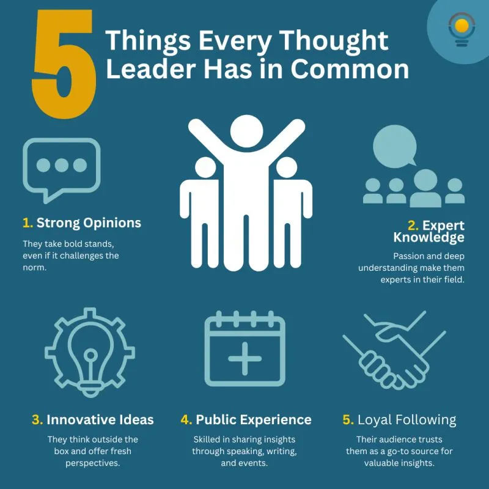
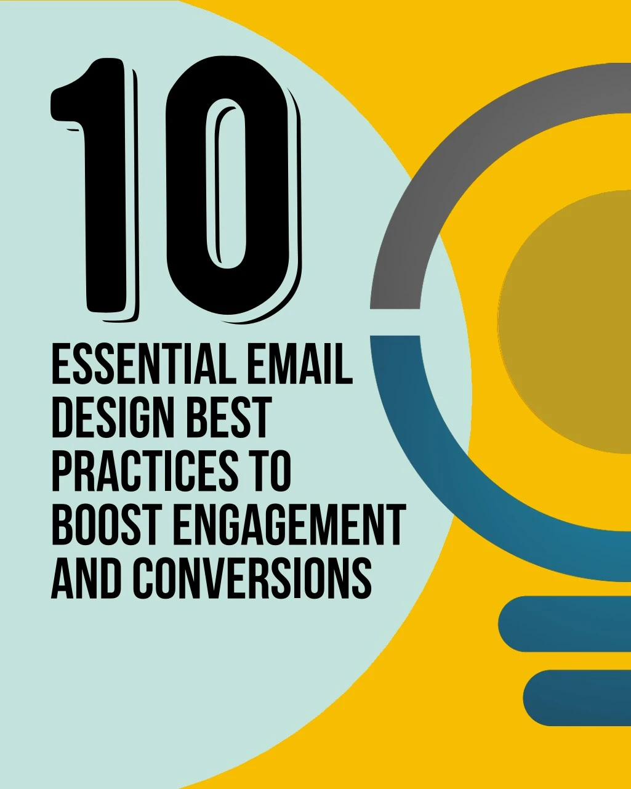
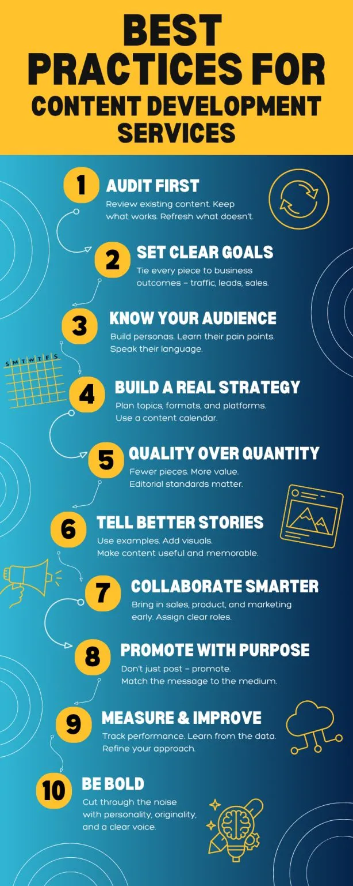
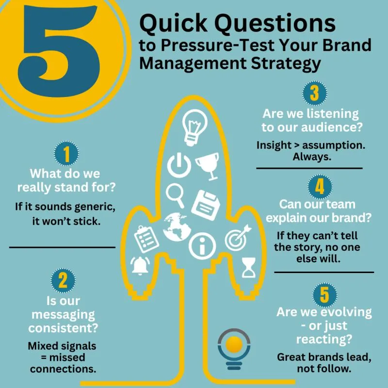

Risk reduction
Models that help leaders reduce risk as they scale AI across the organization.
Raj offers AI Executive Training that helps teams adopt AI tools, enabling them to build long-term business value for their organizations. Each session delivers frameworks that executives can apply immediately.


Raj’s AI Executive Training shifts leadership focus towards sustainable execution. Senior teams learn how to reduce internal resistance and apply AI where it delivers the highest ROI.
Raj’s sessions are tailored to each organization’s priorities and aligning departments on clear goals while reducing AI adoption time by up to 40%.
Executives leave the sessions with playbooks built around real use cases that help them to pivot quickly.
Raj Goodman’s artificial intelligence professional program is tailored for business leaders managing multiple teams across various departments. His training has been successfully conducted across five continents for over 300 executives in the past year alone.
This AI training for executives includes models for risk reduction, budget justification and governance. Post-training, many participants implemented strategic pilots and reported reduced friction across operations.
This isn’t generic training; these sessions are outcome-driven and reserved for decision-makers. Each AI executive training session is capped to ensure undivided attention to the participants.
Raj’s sessions are based on his proprietary AI modules, developed through work with global firms across tech, finance, and infrastructure, among others.
Models that help leaders reduce risk as they scale AI across the organization.
Build the case to justify AI spend and prove return on investment.
Governance frameworks for responsible, compliant AI adoption.
Assess your AI infrastructure readiness before pilot deployment.
Enable your teams to adopt AI and reduce internal resistance.
Built from Raj’s work with global firms across tech, finance and infrastructure.

Designed for senior leadership, this executive training focuses on AI infrastructure readiness and workforce enablement. Each session delivers a tested launch framework, ready for pilot deployment, with built-in KPIs for leadership teams to track performance.
Raj’s AI executive training is designed to make the participants move fast. 94% of leaders apply frameworks from the session within four weeks. The executives and leadership teams leave with practical implementation models that align with their organizational workflows. The artificial intelligence professional program is rooted in real-world use cases from different sectors and industries across the world.
During training, participants are handed internal playbooks and review models. They begin adapting their AI skills to creating clear KPIs and aligning their business goals.
Designed for senior leadership and tailored to your priorities and AI infrastructure readiness.
Each session delivers a tested launch framework, ready for pilot deployment, with built-in KPIs.
Leaders work through real use cases and adapt internal playbooks and review models to their workflows.
94% of leaders apply the frameworks within four weeks, with clear KPIs to track performance.
If you are keen to apply AI learnings to your team and get tangible outcomes, get in touch with Raj.
Goodman Lantern has delivered content and strategy services for 150+ clients across five continents. In the recent past, the company has also earned recognition as one of the Top 10 Content Marketing Providers globally by FindBestSEO for strategic and high-performance content execution.
Raj Goodman’s work in AI and emerging tech has been recognized by leading platforms and cited across global forums and industry reports. He has also been regularly featured in top media across the world.
Raj delivers strategic insights on AI and innovation, backed by decades of data-led work with globally successful organizations. He views AI as a tool to accelerate business transformation by optimizing workflows and unlocking new revenue streams.

With a retiring workforce goes decades of hard-won expertise. Here's how AI can capture it before it walks out the door.
EXPLORE →
AI pilot failure in enterprise initiatives is surprisingly common — here's why, and how to beat it.
EXPLORE →
Almost any AI pilot looks promising in controlled environments. These five survive the shop floor.
EXPLORE →Raj's influence now spans 5 continents and 50+ countries.
From Silicon Valley boardrooms to Mumbai startups, see how Raj’s insights are reshaping industries globally.
As a founder and innovation strategist, Raj leads two ventures to help organizations grow with purpose and clarity in a rapidly evolving digital world.

Goodman Lantern is a content marketing agency that helps B2B brands align expert content with business goals. The company helps in driving lead generation and long-term market growth.
Visit Goodman Lantern →
AI-First Mindset® guides leadership teams to integrate AI in their businesses where it matters most. Through strategic coaching and tailored programs, Raj helps companies shift from AI exploration to adoption.
Visit AI-First Mindset →From the road to the stage, Raj shares his perspective on AI, leadership and the journey in real time. Catch the latest on LinkedIn.




Join Raj's newsletter for the latest on AI, strategy & innovation — straight to your inbox.